.jpeg) 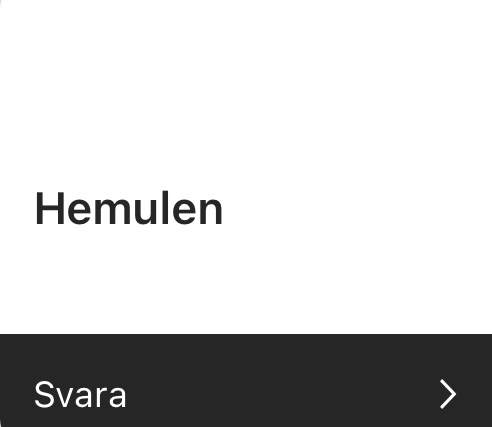
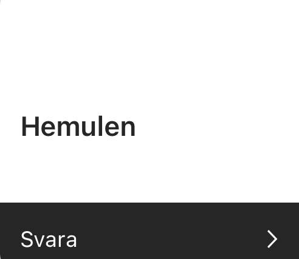
 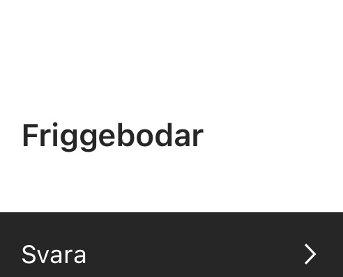
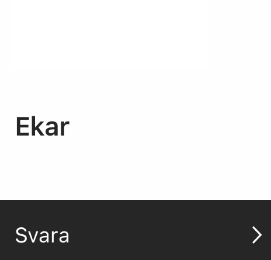
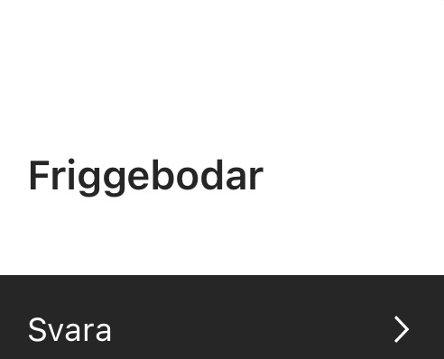
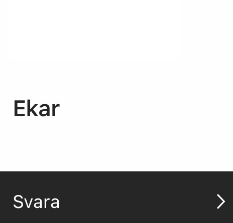

 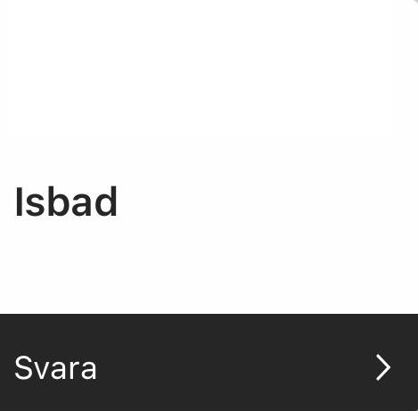
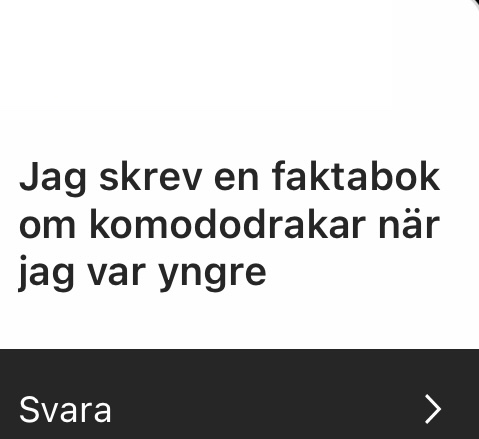
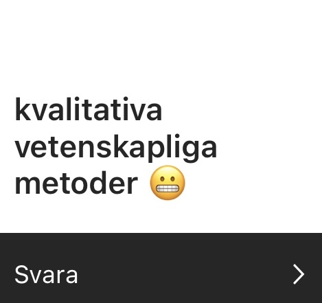
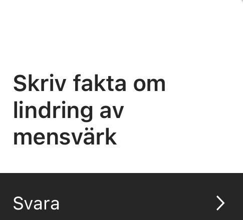
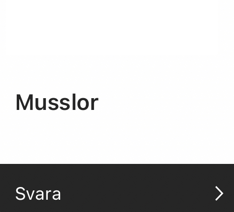
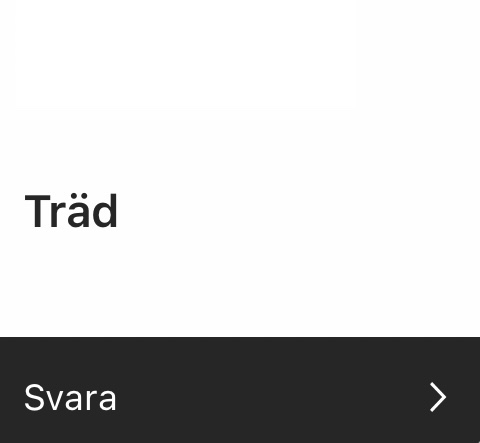
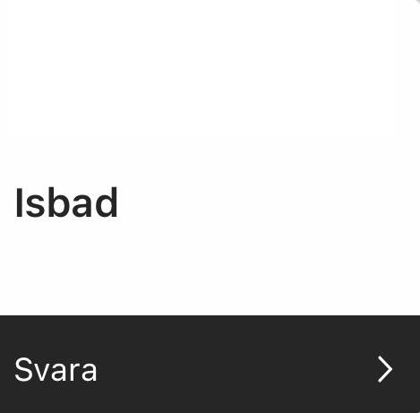
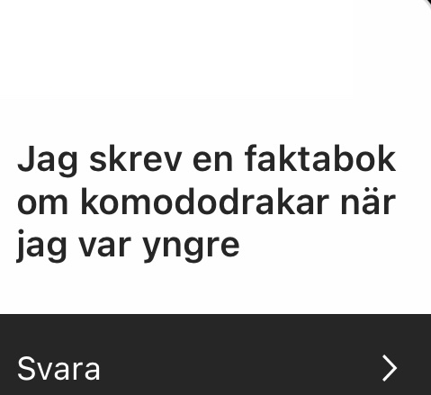
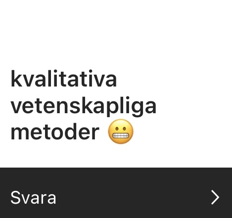
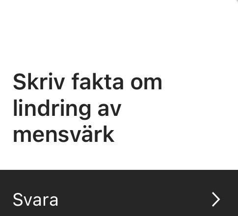
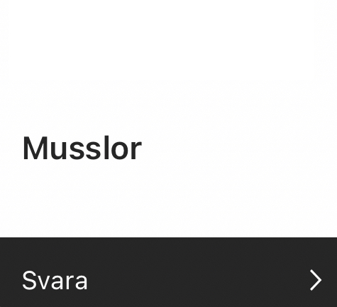
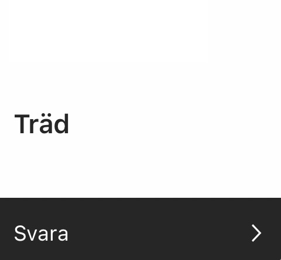
 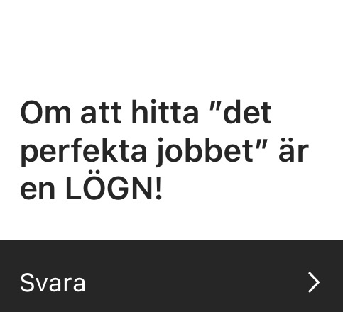
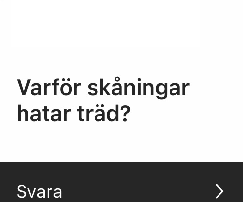
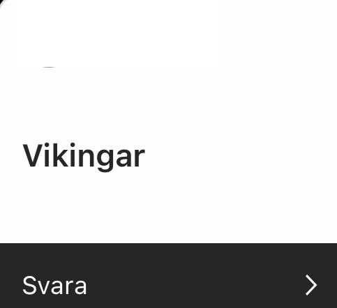
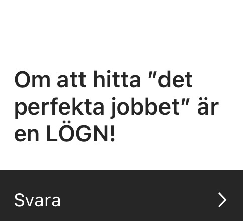
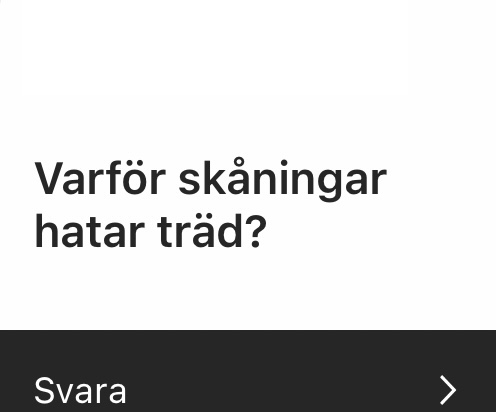
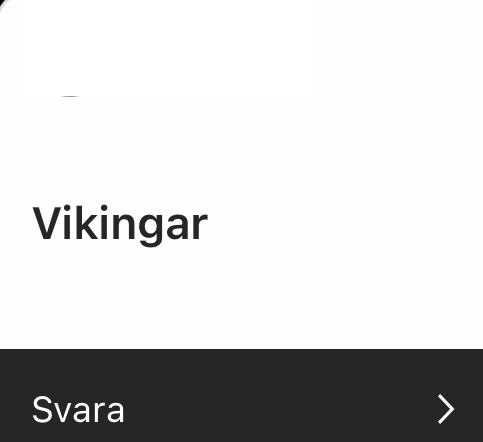

 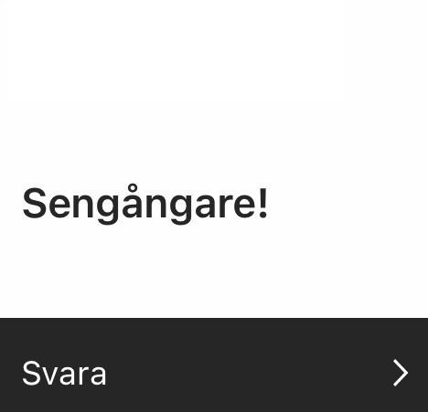
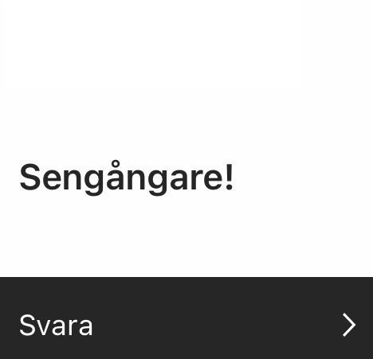
In the early days of 2024, when people where still eating leftovers from Christmas and
realizing how
poor they
where after splurging throughout December even though society was in the middle of the next global Great
Depression™ a few people in Sweden entered a project that wasn’t a project until... it was a project.
The author of this webpage was so fully immersed in learning how to code, that all the creativity she had
and
that needed to be released and was the main reason for her career change, disappeared. Left in her brain was
only Flexbox Froggy and the question if she had watered her real plants or if she only had played Grid
Garden.
Also, had she had a drink of water herself? Probably not.
As her mind was blank, she reached out to her
friends on the social media platform Instagram with the question:
“What should I write about?” with the intention of designing a news site based on one of the answers. Fast
forward to the next morning when her DM was full of fantastic and hilarious suggestions and thus the birth
of
the Brainstorming Project!
This website will show all the answers in Swedish, but as I continue to learn through out this Boot camp
experience I have the intention to code som kind of translation function because there has to be one -
right?
Also, wouldn’t in be cool to have a function where you can continue brainstorming on this website?
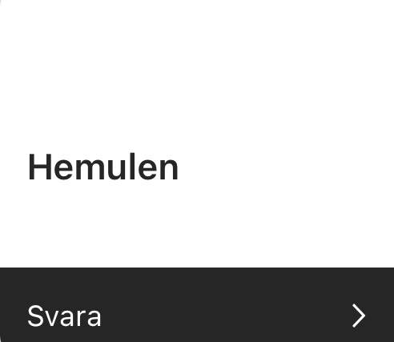
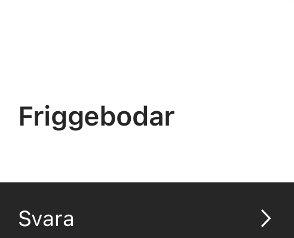
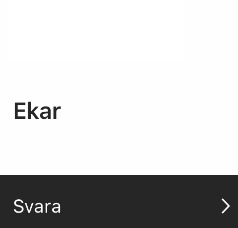
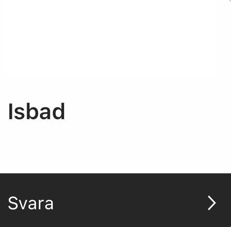
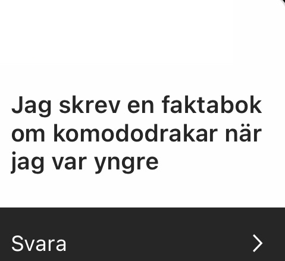
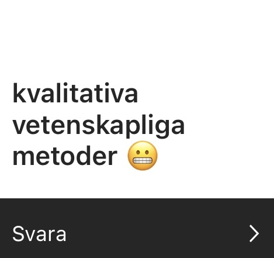
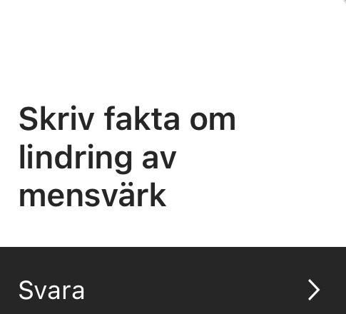
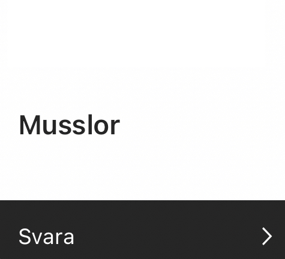
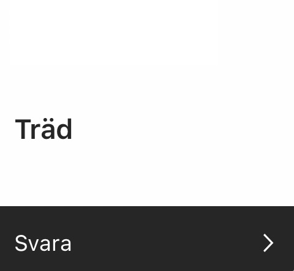
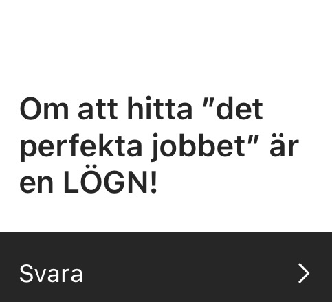
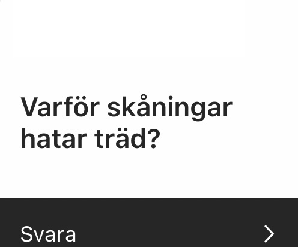
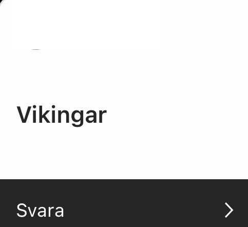
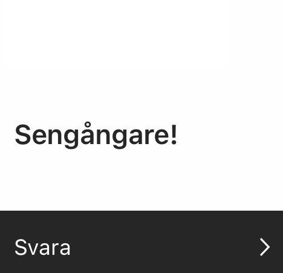